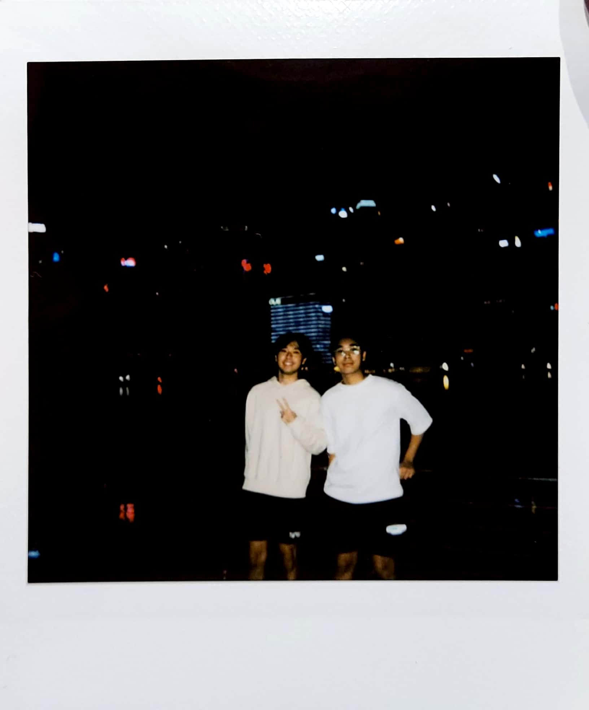
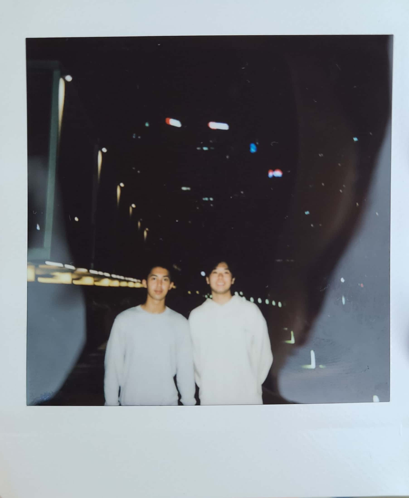
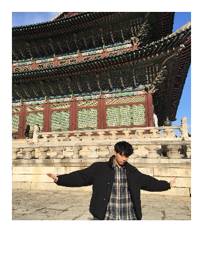
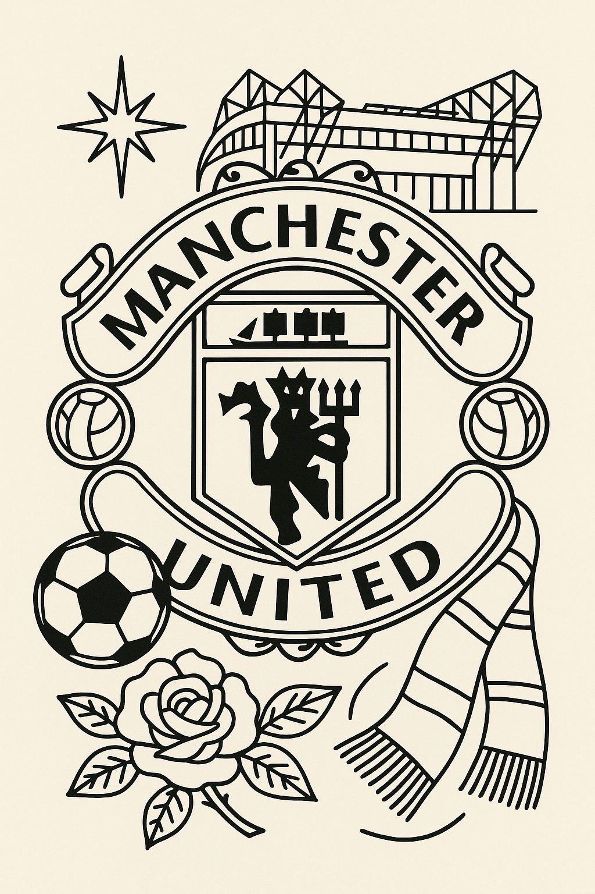
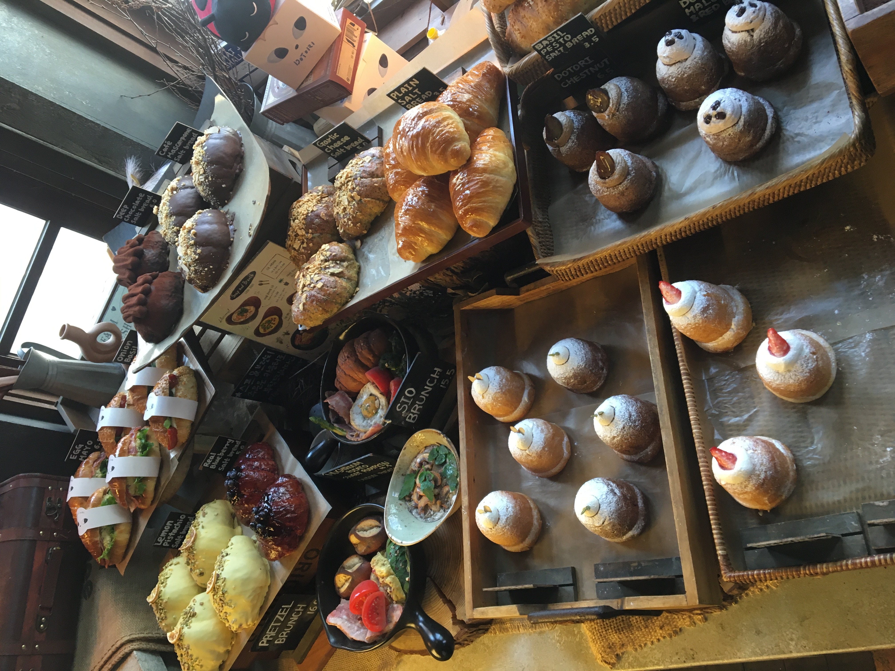
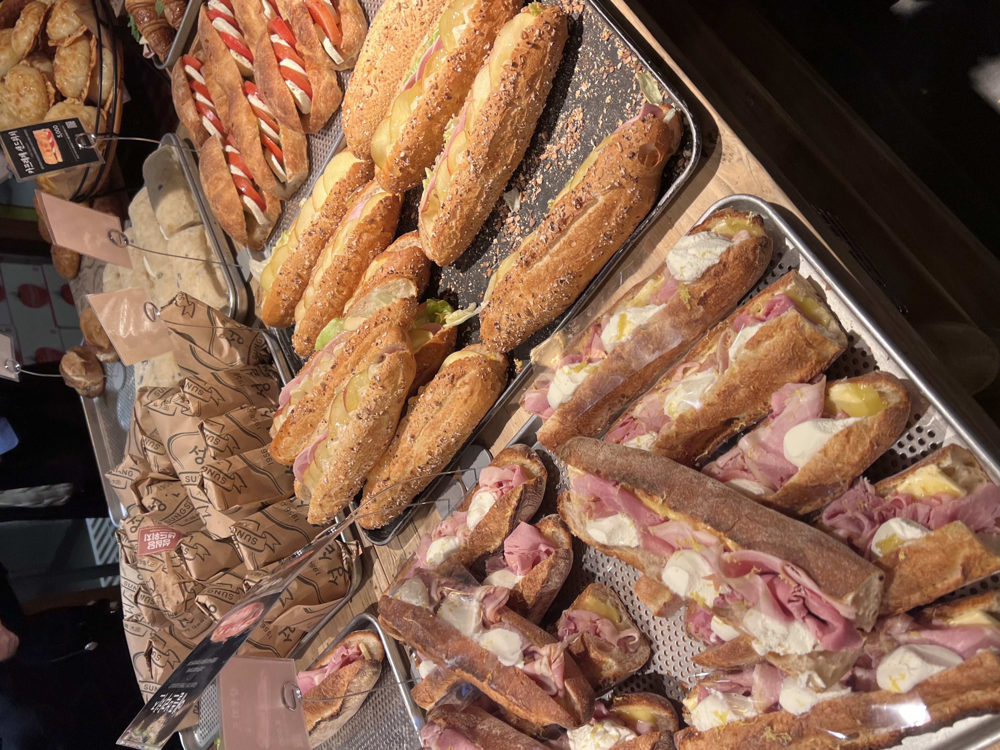

Born in South Korea, raised in Indonesia and went to university in Singapore, I have a passion for music, sports, technologies and deserts! My two go-to music genres are ballad when I'm relaxed and rap when I'm in the gym. I'm also a Red Devil, proud Manchester United fan since I was 9 (of course my favorite player is Ji Sung Park)


In my free time, I enjoy listening to music, going to karaoke and gym (back is my favorite day!) and read articles about the latest cyber attacks and newly found exploits and vulnerabilities

